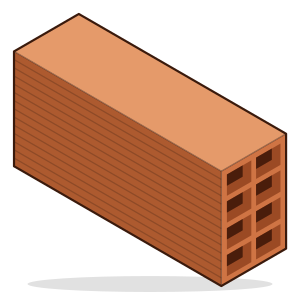
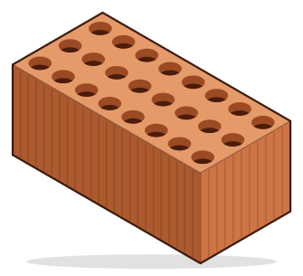
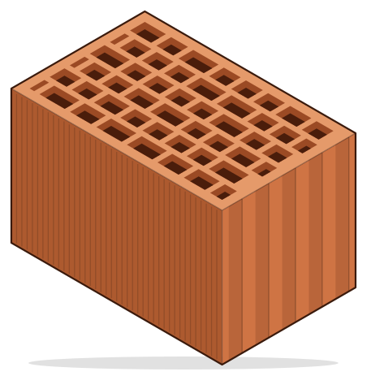
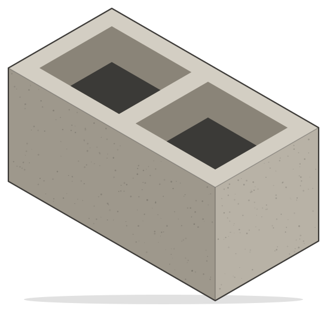

Ladrillo hueco convencional
Tabiquería interior y distribución de viviendas, trasdosados y divisiones. El sistema más versátil, con buena planeidad para guarnecer o alicatar.
Subcontrata de tabiquería en Alicante, Murcia, Valencia y Albacete
Tabiquería interior y cerramientos con equipo propio. Más de 10 años en obra y capacidad disponible para nuevos proyectos.
Ejecutamos cada sistema según proyecto, con el mismo equipo de principio a fin.

Tabiquería interior y distribución de viviendas, trasdosados y divisiones. El sistema más versátil, con buena planeidad para guarnecer o alicatar.

Para muros que necesitan más resistencia y aislamiento acústico: medianeras, separación entre viviendas y cerramientos.

Bloque cerámico de gran formato para muros de carga y fachadas de una sola hoja, con buen aislamiento térmico y acústico.

Muros resistentes para naves, garajes, vallados, muros de contención y vasos de piscina.
Proyectos que estamos ejecutando en estos momentos.
Mutxamel, Alicante
Ejecución de los cerramientos de ladrillo de una promoción de 11 viviendas unifamiliares adosadas, repartidas en tres bloques.
Elda, Alicante
Ejecución de las fachadas y medianeras de ladrillo de un edificio residencial de 5 viviendas y 2 áticos.
Algunos de los trabajos que hemos ejecutado en Alicante, Murcia, Valencia y Albacete.
Elda, Alicante
Ejecución completa del forjado sanitario con muros de bloque de hormigón, coronados con bloque en U armado y hormigonado para formar el zuncho perimetral.
Valencia
Ejecución de las medianeras de ladrillo cerámico entre pilares, levantados a lo largo de toda la parcela junto a las edificaciones colindantes.
Alicante
Ejecución de la tabiquería interior de ladrillo cerámico en la ampliación de un chalet, incluida la planta bajo cubierta inclinada.
Alicante
Ejecución de un muro de bloque termoarcilla para separar dos parcelas: un centro deportivo y una vivienda unifamiliar.
Albacete
Construcción del vaso de una piscina con muros de ladrillo cerámico, levantados sobre la losa y listos para el revestimiento.
Valencia
Transformación de un local comercial en planta baja en vivienda: replanteo, nueva distribución interior con tabiquería de ladrillo y cerramiento de la antigua fachada del local.
Elda, Alicante
Ejecución de los cerramientos de fachada con bloque termoarcilla entre la estructura de hormigón, en planta baja y primera, incluidos los huecos de ventanas.
Elda, Alicante
Ejecución del muro de cerramiento de parcela con bloque de hormigón, incluidas las pilastras con esperas de armadura.